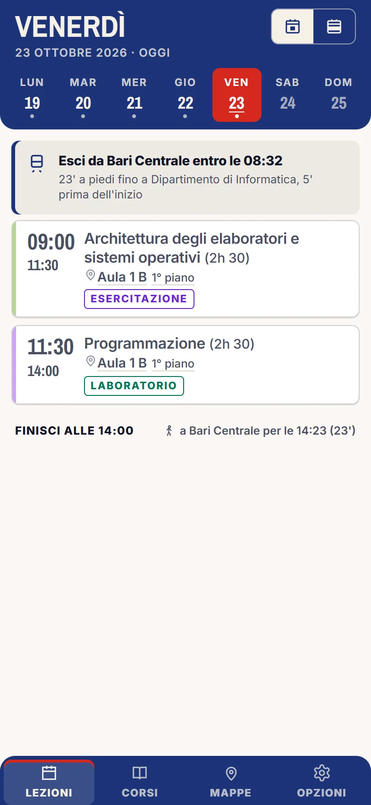
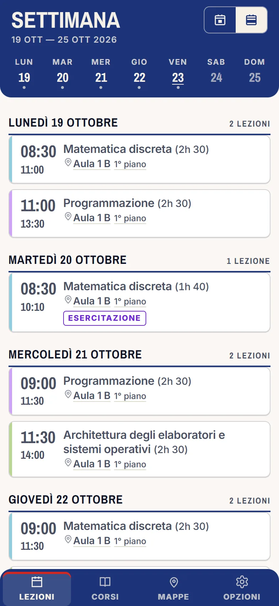
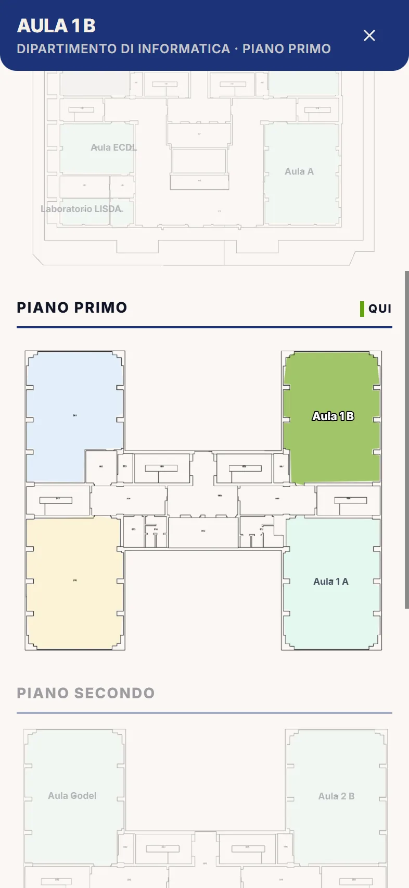
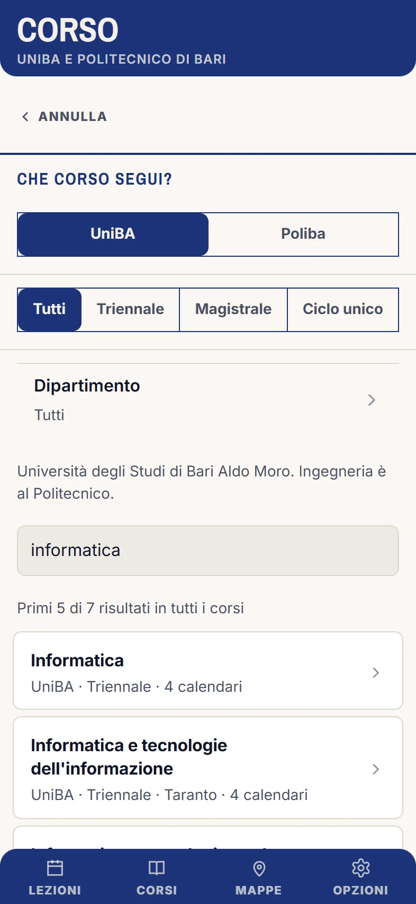

Funzioni.
Cosa fa Sciamn oggi e cosa ancora no. Prende l'orario pubblico degli atenei ed è un'app non ufficiale.
Oggi.
Apri l'app e trovi le lezioni di oggi con ora, aula e piano. La lezione in corso mostra quanto manca alla fine, quella che sta per iniziare dice tra quanti minuti.
- Tra una lezione e l'altra vedi quanto dura la pausa e, se cambia edificio, quanti minuti servono a piedi.
- Le lezioni annullate o sospese sono segnate come tali.
- Per le lezioni online c'è il link per entrare.
- Per cambiare giorno scorri col dito.

La settimana.
Un interruttore in alto passa da Giorno a Settimana. Ogni corso ha il suo colore, che scegli tu da una mazzetta.
Puoi filtrare per anno di corso, per iniziale del cognome (per i corsi divisi A-K / L-Z) e per indirizzo, e tenere solo i corsi che segui davvero. Ogni corso ha la sua scheda, con le note che scrivi tu.
Per aggiornare l'orario trascini la lista verso il basso.

Il tuo corso.
Il corso si cerca per nome, anche con un errore di battitura. Ci sono i corsi dell'Università di Bari che pubblicano l'orario online e quelli del Politecnico di Bari.
- Filtri
- Per tipo (triennale, magistrale, ciclo unico) e per dipartimento. Per UniBA c'è anche il link alla pagina del corso.
- Tutto il corso o un anno
- Scegli l'intero corso oppure solo il tuo anno.
- Più calendari insieme
- Fino a 3, per esempio per gli insegnamenti comuni del primo anno al Politecnico.
- Il tuo corso non c'è?
- Incolla il link del suo calendario, oppure segnalalo dall'app.
Trovare l'aula.
Tocchi l'aula di una lezione e si apre la pianta del piano con l'aula evidenziata. Se due lezioni sono in edifici diversi, l'app conta i minuti a piedi tra l'uno e l'altro.
Per ora le piante ci sono solo per due edifici del Campus Quagliariello: il Dipartimento di Informatica e il Palazzo delle Aule. Per gli altri l'app mostra il nome e l'aula, ma non la pianta. La scheda Mappe, con la ricerca di tutte le aule, è in preparazione e non c'è ancora.

Gli avvisi.
- Promemoria
- Una notifica prima di ogni lezione, con i minuti che scegli tu, e il riepilogo del mattino: quante lezioni hai e dove è la prima. Su alcuni telefoni, come Xiaomi, serve togliere le restrizioni di batteria all'app.
- Silenzioso a lezione
- Il telefono va in «Non disturbare» quando inizia la lezione e torna normale alla fine. Cosa lasciar passare lo decidi tu. Le pause brevi restano in silenzio, le lezioni solo online non contano, e un Non disturbare acceso da te non viene mai spento. Serve il tuo permesso.
- Quando uscire
- Con «Mostra i treni» acceso, il giorno ti dice entro che ora uscire da Bari Centrale per essere in aula in tempo e quando tornarci a fine giornata. Lo calcola dai minuti a piedi e da quanto prima vuoi arrivare in aula.

Il resto.
- Calendario del telefono
- Le lezioni che vedi con i tuoi filtri possono finire nel calendario del telefono, senza doppioni. Lo fa da sola a ogni scaricamento, oppure a mano quando vuoi. Le annullate non entrano.
- Chiaro o scuro
- Segue il telefono, oppure scegli tu.
- Si aggiorna da sola
- Le novità arrivano senza scaricare di nuovo l'app. Se una versione cambia qualcosa che tocca il telefono più a fondo, la reinstalli da questa pagina.
- Segnalazioni
- Dalla prima riga delle Opzioni scrivi un problema, un corso che manca o un'idea. La legge chi ha fatto l'app.
Non ancora.
- I treni veri. Oggi l'app calcola solo a che ora uscire da Bari Centrale. Non ti dice quale treno prendere né se è in ritardo: orari dei treni e tempo reale sono in sviluppo.
- La ricerca delle aule. La scheda Mappe è ancora vuota.
- Altre piante. Solo due edifici hanno la pianta.
Quando una di queste cose arriva, la trovi scritta nelle Novità.
Provala.
Versione 1.3.3, 5,0 MB, per Android 7 o successivo; su iPhone non c'è ancora.
